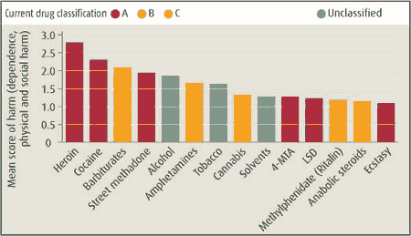

Pétard ou alcool
Dans un podcast avec Doc Gyneco, John Paul Lepers épingle des sympathisants UMP à moitié bourrés (Doc n'était pas en meilleur état).
-- Et le pétard ? leur demande John Paul.
-- On est contre.
-- Et l’alcool ?
-- On est pour, avec modération.
Tout est dit.

Chaque fois que des gens expriment de telles idées, encore plus s'ils sont engagés en politique, il faudrait leur mettre sous les yeux les statistiques qui mesure la dangerosité des drogues. L’alcool est une drogue plus nocive que le cannabis, plus nocive que le LSD ou l’ecstasy ! Si nous encourageons la consommation d’alcool, même modérément, nous devons aussi autoriser la consommation des drogues moins nocives.
Suite | 2006 | Sommaire | Texte publié jeudi 7 septembre 2006